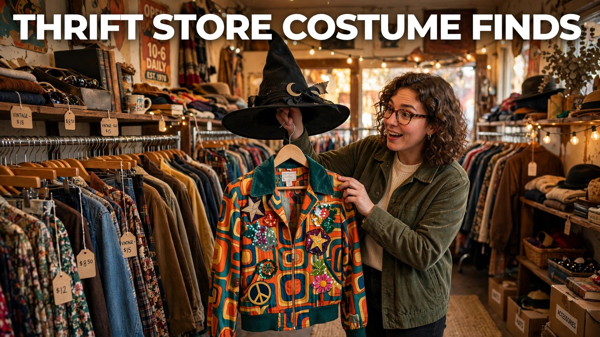

The best Halloween costumes are not in the pop-up costume shop — they are buried in the racks of your local thrift store. Vintage blazers, retro dresses, old uniforms, and forgotten accessories are costume gold: cheaper than packaged costumes, better quality, more original, and kinder to the planet. A fifteen-dollar thrift haul plus an hour of DIY beats a sixty-dollar bagged costume every single time.
This 2026 guide shows you how to thrift like a costume designer: when to shop, what to look for in every aisle, the DIY upgrades that transform ordinary clothes into great costumes, and a full list of under-$20 costume ideas you can build this weekend.
When & Where to Thrift for Halloween
Timing is everything. Start browsing in late September, when stores begin putting out donated costumes from previous years — this is when you find the gems. Early October brings the biggest costume-specific stock as stores set up Halloween sections. Avoid the final week: picked over and picked clean. Shop multiple store types: big chains for volume, small charity shops for vintage oddities, and estate-sale-style stores for genuine period pieces. Go on weekday mornings when new donations hit the floor, and always check back — inventory turns over daily in October. Bring a tape measure and wear fitted clothes so you can try things over what you have on.
What to Look for in Every Aisle
- Blazers & suits: the foundation of detectives, spies, vampires, zombies, and 80s villains. Oversized fits work in your favor.
- Dresses: prom dresses become princesses, ghosts, or 50s housewives; black dresses become witches, vampires, or Morticia.
- Hats: fedoras, top hats, cowboy hats, and caps instantly define a character. Check the accessories wall too.
- Uniforms & workwear: old scrubs, coveralls, military surplus, and aprons are costume shortcuts.
- Fabrics & curtains: capes, togas, cloaks, and ghost costumes start as flat fabric. Look for interesting textures.
- Shoes & boots: character shoes complete a look; scuffed is fine, even better for zombies.
- Kids' section: oversized kids' clothes make great costume pieces for adults going for funny.
Train your eye for potential, not perfection: a stained white shirt is a zombie shirt; a too-big blazer is a detective's coat.
DIY Upgrades That Transform Thrift Finds
The difference between "wearing old clothes" and "wearing a costume" is ten dollars of craft supplies and one evening:
- Distressing: tear hems, add fake blood (corn syrup + red food coloring), smudge with charcoal for zombies, ghosts, and apocalypse survivors.
- Accessories: a thrifted blazer plus a toy magnifying glass is a detective; add fangs and it is a vampire. One signature prop sells the whole costume.
- Makeup: drugstore face paint turns any outfit into a character — skeleton, clown, cat, or corpse bride.
- Stencils & paint: fabric paint adds logos, blood splatter, or patterns. Stencil a name tag on coveralls for an instant "employee" costume.
- Layering: a cape over street clothes, a vest over a shirt, a belt over a dress — layers read as "costume" to the eye.
Under-$20 Thrift Costume Ideas
- Detective: thrifted trench or blazer + fedora + toy magnifying glass. Under $12.
- Zombie: any old suit or dress, distressed with fake blood. Under $10.
- 80s aerobics instructor: neon thrift finds + leg warmers + headband. Under $15.
- Tourist: loud Hawaiian shirt + camera strap + fanny pack. Under $12.
- Vampire: black thrift clothes + cape fabric + plastic fangs. Under $15.
- Scarecrow: flannel + jeans + straw hat + stitched makeup. Under $12.
- Artist: beret + thrifted smock + cardboard palette. Under $10.
- Ghost of fashion past: any white/cream vintage dress + pale makeup. Under $12.
Thrifting Tips: Quality, Hygiene & Fit
Check seams, zippers, and armpits before buying — thrift stores do not take returns. Wash or air everything before Halloween night; a run through the washer with vinegar freshens most fabrics, and hanging items in sunlight kills odors naturally. For fit, remember costumes forgive: oversized reads as intentional, and belts, safety pins, and a little tailoring tape fix almost everything. If you are thrifting for kids, prioritize comfort and flame-resistant fabrics, skip small detachable parts, and make sure they can walk, sit, and see clearly. Finally, keep receipts and donate the costume back in November — the circle of thrift continues.
Why Thrifted Costumes Win
Beyond the price, thrifted costumes are simply better. Packaged costumes are thin polyester designed to survive one night; thrifted clothes are real garments that look and feel authentic in photos. Nobody else at the party will be wearing your exact outfit — originality is built in. And the sustainability math is compelling: the average Halloween generates thousands of tons of textile waste from single-use costumes. Thrifting keeps good clothes in circulation and keeps your money in local charities. Cheap, unique, and responsible — the thrift store is the costume shop that was there all along.
Couples & Group Costumes from Thrift Racks
Thrift stores shine brightest for coordinated costumes. Couples: 50s diner duo (poodle skirt + leather jacket), tourists (matching loud shirts), or a gothic pair (black dress + suit with cape). Groups of three to four: breakfast foods (bacon, eggs, toast via colored shirts and cardboard), the Scooby gang (ascots and headbands from the accessories wall), or decades (each person picks a different era from the vintage racks). Families: storybook characters, a box of crayons (matching colored shirts with cone hats), or zoo animals. Coordinate a group chat with everyone's sizes and a thrift date — hunting together is half the fun, and you will spot pieces for each other you would never find alone.